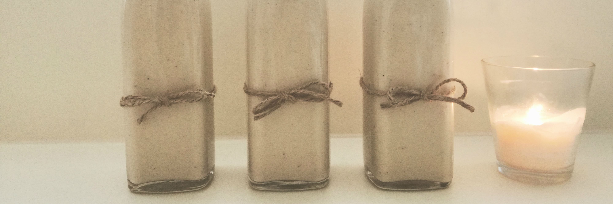
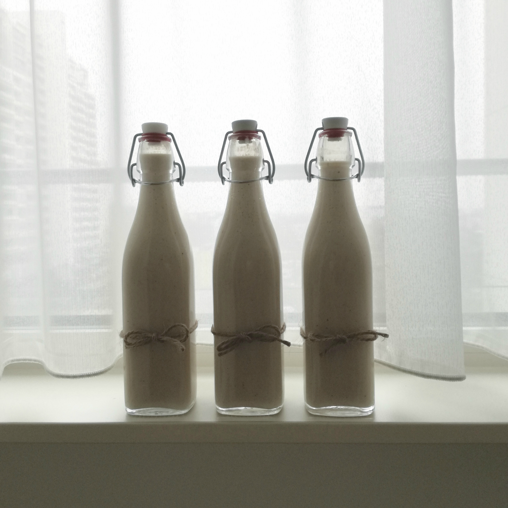

Ponche Crema for Christmas
This is our first Christmas away from home, and to make the holidays actually feel more Christmassy, I decided to prepare this traditional Venezuelan Christmas drink, which consists on eggs, milk, rum and spices.
I never prepared it at home before. It wasn’t a traditional recipe for my family. But every time I visited my husband’s family and my closest friends, there was always a nice bottle of freshly made homemade Ponche Crema to enjoy together during the holiday season.
So my husband and I decided to ask for the best Ponche Crema recipes we have ever tasted before, and that was asking his two grand mothers and also one of our best friends. What we found out, is that the 3 recipes were completely different! Each recipe comes from a different part of the country and the ingredients and preparation varies quite a lot!
Sadly, those recipes are super secret family treasures, and I’m not really allowed to share them here :( So I decided to make my own twists, and prepare this drink a bit less sweet and with our own personal touch. The result was simply delicious!

Ingredients: (Yields for 1 - 1 ½ liters)
- 7 egg yolks
- 3 cups whole milk
- 4 tbsp vanilla pudding powder (cornstarch with vanilla flavour)
- 1 can condensed milk
- 1/2 to 1 tsp ground Cinnamon (or 1 stick)
- 1/4 tsp ground cardamom
- 1/4 tsp ground nutmeg
- 1/4 tsp cloves
- 1/2 vanilla bean
- Lemon zest in one or 2 big chunks
- 1 pinch of sea salt
- 1 - 2 cups of dark Rum
Preparation:
- Slowly mix the egg yolks in a pot with a fork.
- Cook 2 ½ cups of the milk with all the spices in very low heat, constantly stirring until is very hot but not to the boiling point and turn of the heat.
- In the meantime, add the condensed milk to the egg yolks and continue stirring.
- Add ¼ cup of the warm spiced milk to the egg yolk-condensed milk mixture and stir vigorously with a fork to warm up the eggs without cooking them yet.
- Remove the pieces of lemon zest, cinnamon, cloves and other spices from the milk if any. You can skip this if you used powdered spices.
- Add the egg yolks and condensed milk slowly into the warm spiced milk and stir.
- In the meantime mix the pudding powder with the remaining ½ cup of cold milk.
- Then turn on the heat again to low-medium and while stirring add the pudding mixture.
- Keep cooking it and stirring until it has a thicker consistency. This might take a while, so be a bit patient. You’ll have to keep stirring for about 10 minutes until it gets pretty thick as you can see in one of the pictures in the gallery below. This is important because after you add the rum it could end up being to liquid if you don’t cook it enough. If it gets sticky at the bottom of the pan, don’t worry about that, just make sure it doesn’t get burned.
- Now, turn off the heat, move to a ceramic bowl and let it rest until gets colder. Our amazing technique was to open the window for some minutes. The freezing wintery wind did the job nicely :)
- When it is finally colder you can blend it to make the texture smoother.
- After that you can add the desired amount of rum and just mix it with a stick until properly mixed together.
Now that you’re ready, put some ice cubes in small glasses, serve and enjoy! Salud!
Some tips you can find helpful:
Nice swap
If you’re able to find unsweetened condensed milk, then go ahead with that and use some stevia instead to avoid the huge amounts of sugar from the condensed milk. I prepared the normal version as I couldn’t find any other healthier choice. Anyways, you’re not supposed to drink it all by yourself, right? :)
Regarding cleanliness
When putting the Ponche Crema in glass bottles, make sure to sterilize them before. What I do, is to fill them with boiling water and some vinegar and let them soak for some minutes. After that, I just dry them very well with paper towels. Try not using a cloth unless it’s perfectly clean, to avoid germs to invade your preparation. This usually can be stored in the fridge for a maximum of 5-6 days.
Gallery